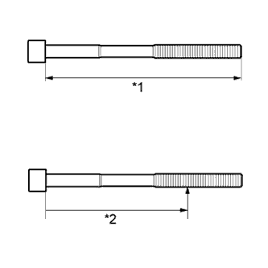
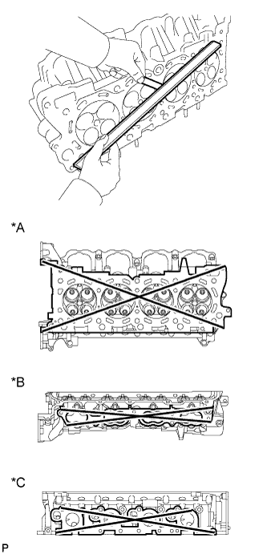

CYLINDER HEAD GASKET > REMOVAL |
| 1. REMOVE EXHAUST MANIFOLD ASSEMBLY |
Remove the exhaust manifold assembly (Click here).
| 2. REMOVE CAMSHAFT SUB-ASSEMBLY |
Remove the camshaft sub-assembly (Click here).
| 3. REMOVE NO. 1 VALVE ROCKER ARM SUB-ASSEMBLY |
Remove the 32 No. 1 valve rocker arms from the cylinder head.
| 4. REMOVE VALVE LASH ADJUSTER ASSEMBLY |
Remove the 32 valve lash adjusters from the cylinder head.
| 5. REMOVE VALVE STEM CAP |
Remove the 32 valve stem caps from the cylinder head.
| 6. REMOVE CYLINDER HEAD SUB-ASSEMBLY LH |
Uniformly loosen and remove the 2 bolts in the sequence shown in the illustration.
Using a 10 mm bi-hexagon wrench, uniformly loosen the 10 cylinder head bolts in the sequence shown in the illustration. Remove the 10 cylinder head bolts and plate washers.
Remove the cylinder head LH.
| 7. REMOVE NO. 2 CYLINDER HEAD GASKET |
| 8. REMOVE CYLINDER HEAD SUB-ASSEMBLY |
Uniformly loosen and remove the 2 bolts in the sequence shown in the illustration.
Using a 10 mm bi-hexagon wrench, uniformly loosen the 10 cylinder head bolts in the sequence shown in the illustration. Remove the 10 cylinder head bolts and plate washers.
Remove the cylinder head.
| 9. REMOVE CYLINDER HEAD GASKET |
| 10. INSPECT CYLINDER HEAD SET BOLT |
|  |
Using a vernier caliper, measure the length of the cylinder head set bolt from the seat to the end.
| *1 | Measurement Length |
| *2 | Distance |
Using a vernier caliper, measure the diameter of the elongated threads around the point indicated in the illustration.
| Item | Specified Condition |
| Intake side bolt | 103 mm (4.06 in.) |
| Exhaust side bolt | 108 mm (4.25 in.) |
| 11. INSPECT CYLINDER HEAD SUB-ASSEMBLY |
|  |
Using a precision straightedge and feeler gauge, measure the warpage of the contact surfaces of the cylinder block and manifold.
| Item | Specified Condition |
| Cylinder block side | 0.05 mm (0.00197 in.) |
| Intake manifold side | 0.08 mm (0.00315 in.) |
| Exhaust manifold side | 0.05 mm (0.00197 in.) |
| *A | for Cylinder Block Side |
| *B | for Intake Manifold Side |
| *C | for Exhaust Manifold Side |
Using a dye penetrant, check the intake ports, exhaust ports and cylinder head surface for cracks.
If cracked, replace the cylinder head sub-assembly.